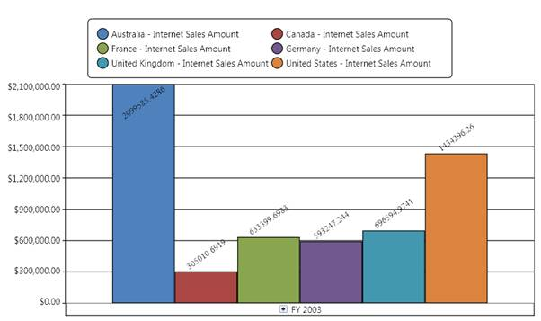

Point label provides information about the data point. Data point can be added to a series by using the following code snippet:
|
[C#]
for(int i=0; i< this.olapchart1.Series.Count; i++) System.Windows.HorizontalAlignment.Right; LabelContent.LabelContentPath;
|
|
[VB]
For i As Integer = 0 To Me.olapchart1.Series.Count - 1 ' Setting the visibility of adornment. Me.olapchart1.Series(i).AdornmentsInfo.Visible = True
' Setting horizontal alignment Me.olapchart1.Series(i).AdornmentsInfo.SegmentHorizontalAlignment = System.Windows.HorizontalAlignment.Right
' Makes the segment out from the series. Me.olapchart1.Series(i).AdornmentsInfo.SegmentIsOut = True
Me.olapchart1.Series(i).AdornmentsInfo.SegmentLabelContent = LabelContent.LabelContentPath Me.olapchart1.Series(i).AdornmentsInfo.SegmentLabelFontSize = 12 Me.olapchart1.Series(i).AdornmentsInfo.SegmentLabelRotation = 325 Next i |
The following figure shows an OlapChart with PointLabels enabled:

Figure 30: A Simple OlapChart with PointLabels
See also:
ChartAdornmentInfo